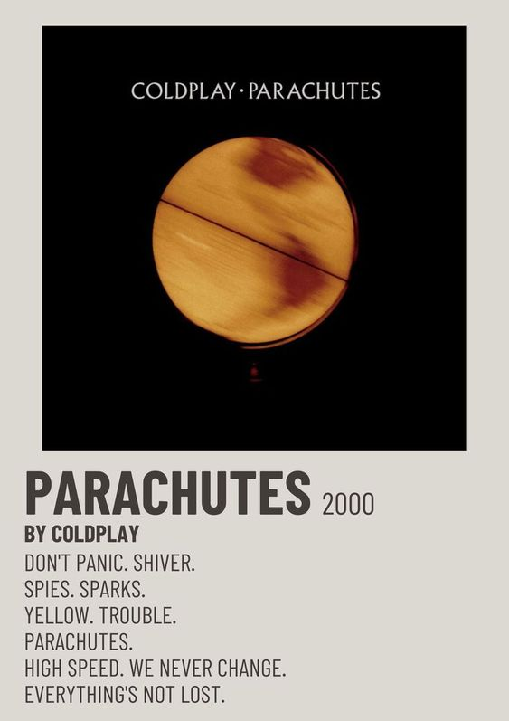

Coldplay's Parachutes
This album is closest to my heart as it comes naturally.
love.
//Parachutes

- Release Date : 10.07.2000
- Number Of Track: 10
- Playtime: 41 min 55 sec
- Genre : Alternative Rock
- Produce By : Parlophone Records Ltd
- - A Warner Music Group Company
Coldplay's Parachutes
A Debut Masterpiece
Shaping the Future of Alternative Rock
Released in 2000, Coldplay's debut studio album, "Parachutes," marked a significant moment in music history. The album features iconic tracks like "Yellow," "Shiver," and "Trouble," showcasing a mix of melancholy and atmospheric sounds that would define the band's style. "Parachutes" won the Grammy Award for Best Alternative Music Album in 2002 and has since been hailed as a timeless classic.
Download the album in Hi-Res Lossless FLAC Quality.